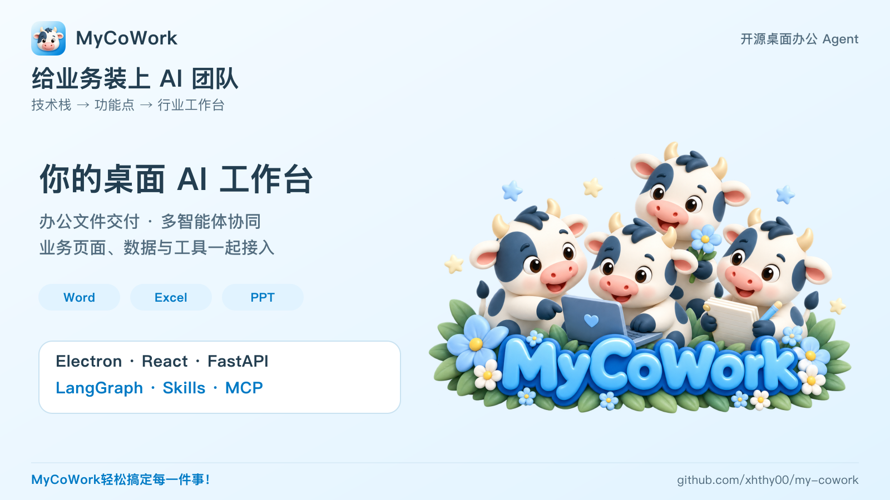
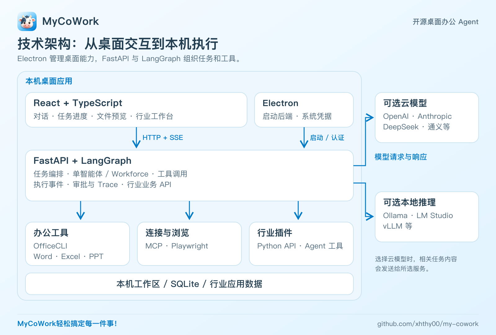
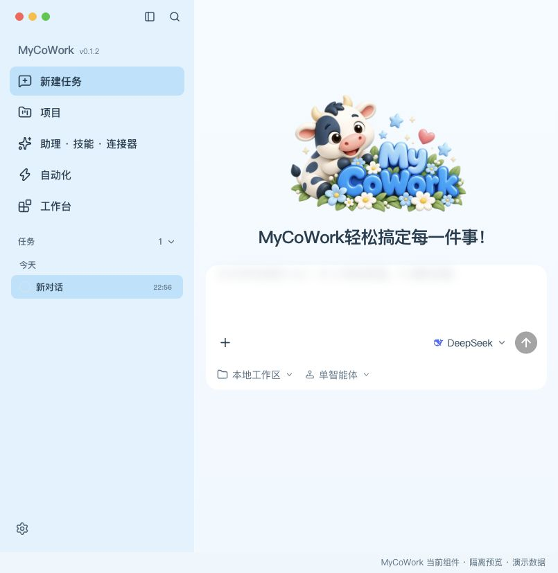
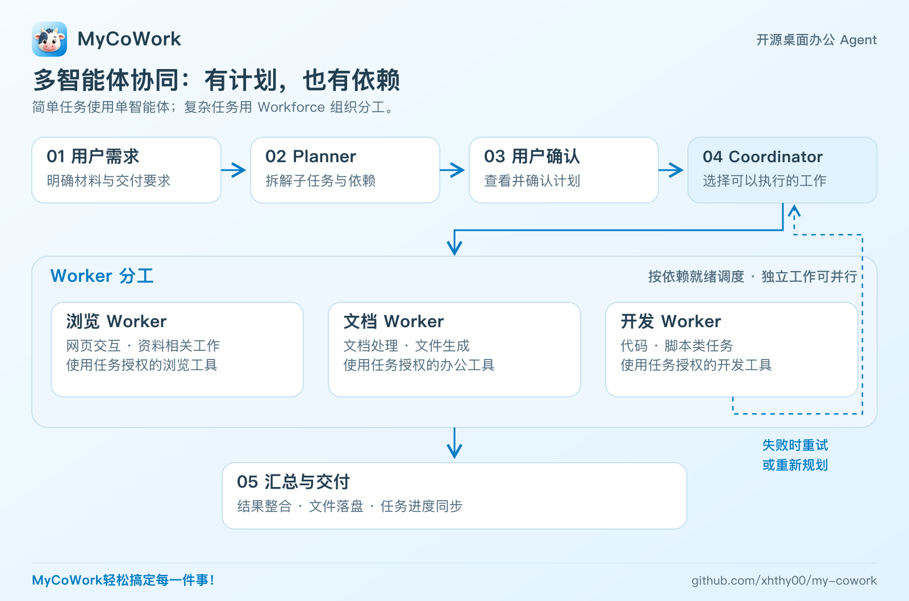
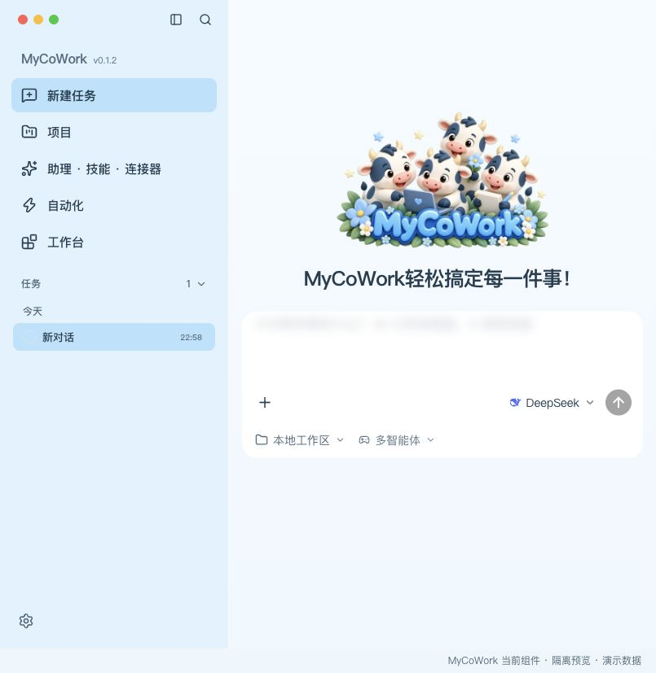
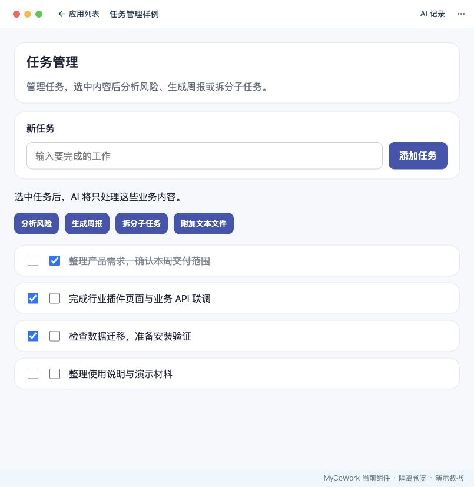
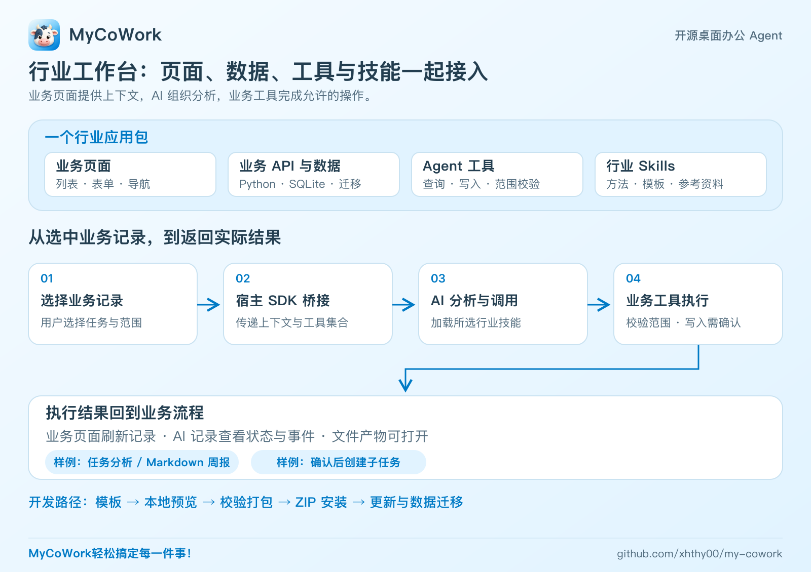

开源了！给业务装上 AI 团队：MyCoWork 的多智能体与行业工作台

如果让 AI 读取材料、生成办公文件、拆解复杂任务，再围绕业务页面里的记录开展分析和操作，一个桌面应用应该怎样把这些能力接起来？
这就是我正在做的开源项目 MyCoWork：基于 Electron + React + FastAPI + LangGraph，把办公工具、多智能体协同和行业插件放进同一个桌面工作区。
用户可以交代任务，查看执行进度，拿到可继续编辑的文件；开发者可以接入模型、工具和场景技能，也可以构建自己的行业应用。
这篇文章从技术栈讲起，再看具体功能，最后重点展开行业工作台如何连接业务页面、数据与 AI。
一、技术栈：一个桌面 Agent 怎样跑起来
MyCoWork 采用本地优先架构：Electron 承载桌面应用并启动 Python 后端，React 负责交互，FastAPI 提供本地服务，LangGraph 组织智能体执行。
| 层次 | 技术 | 负责什么 |
|---|---|---|
| 桌面宿主 | Electron | 启动后端、文件选择、系统凭据与桌面能力 |
| 前端界面 | React、TypeScript、Vite、Tailwind、Radix、Zustand | 对话、任务进度、工作台、状态管理与文件预览 |
| 本地服务 | Python、FastAPI、Uvicorn | 任务接口、业务 API、HTTP + SSE 事件流 |
| 智能体执行 | LangGraph、LangChain 模型适配 | 单智能体工具调用、多智能体规划与调度 |
| 办公文档 | OfficeCLI、python-docx、openpyxl、python-pptx | Word、Excel、PPT 生成与处理 |
| 存储与调度 | SQLite、sqlite-vec、APScheduler | 本地存储、记忆相关能力与定时触发 |
| 扩展机制 | Skills、MCP、行业应用 SDK 与 CLI | 场景方法、外部工具与业务应用扩展 |
桌面交互和工具执行如何衔接

图 1：桌面交互、本机任务执行、工具与可选模型入口。
界面通过 HTTP 发起请求，通过 SSE 接收执行事件。用户可以在工作区持续看到任务状态，工具执行产生的文件则通过产物卡片和预览入口展示。
后端进一步按入口、编排、执行、记忆、可观测、护栏、工具、模型和沙箱划分职责，分别维护任务生命周期、执行 Trace、审批和能力适配。
这种结构让业务界面、模型接入和工具执行有清晰的扩展位置，也为后面的多智能体与行业应用提供基础。
模型可以按需求配置
项目支持 OpenAI、Anthropic、DeepSeek、通义等模型服务，也支持 Ollama、LM Studio、vLLM 等本地推理入口。API Key 使用系统凭据服务保管。
工作区和长期记忆采用本地存储，工具在本机执行；选择云模型时，任务所需的相关内容会发送给所选服务。用户可以结合模型能力、使用成本与数据处理需求进行配置。
二、功能点：这套架构能帮用户做什么
技术最终要落到具体任务上。MyCoWork 目前围绕文件交付、任务协同和能力扩展提供以下功能：
| 功能 | 典型用途 |
|---|---|
| 办公文件生成 | 根据材料生成 Word 报告、Excel 汇总表、PPT 演示文稿 |
| 单智能体 | 由一个 Agent 逐步调用工具，处理直接、相对简单的任务 |
| 多智能体协同 | 拆解复杂需求，按依赖安排浏览、文档、开发 Worker |
| 办公助手与 Skills | 按场景载入方法、模板、写作规范和参考资料 |
| MCP 连接器 | 接入任务所需的外部工具与数据源 |
| 浏览器操作 | 打开、读取、点击、输入、上传、等待与截图 |
| 本地记忆与定时任务 | 保存长期记忆，按配置触发任务；定时执行需要应用保持运行 |
| 行业工作台 | 安装业务应用，在页面内发起 AI 分析与允许的业务操作 |

图 2：当前单智能体首页，使用隔离预览与演示配置。
文件交付：从材料到 Word、Excel、PPT
你可以尝试这样的任务：
根据项目材料整理一份 Word 周报，列出完成事项、风险和下周计划。
根据这份 CSV 生成销售汇总 Excel，说明主要变化。
根据产品介绍材料制作一份内部汇报 PPT，突出功能和使用场景。
助手调用本机文档工具，将产物保存到工作区。用户在同一个窗口查看对话、任务进度和文件，也可以继续编辑或追加修改要求。
生成的内容、数据与排版应按实际用途检查。文件已经落盘，后续修改有明确的对象和交付形式。
多智能体协同：复杂任务有计划、有分工
简单工作可以交给单智能体。需要资料收集、分析和多种产物的任务，可以使用 Workforce：

图 3：先确认计划，再按依赖组织分工；失败任务进入重试或重新规划路径。
Planner 组织子任务，Coordinator 检查依赖并安排执行，浏览、文档和开发 Worker 承担不同工作。满足依赖条件的独立子任务，通过 LangGraph 的 Send 分发执行；需要前置结果的工作，在条件满足后继续。
例如，准备一份产品调研汇报，可以先收集资料，再整理对比，最后制作文档。界面同步子任务状态，执行中还提供失败重试和重新规划路径。
规划和协同会增加模型调用开销，因此两种模式可以按任务复杂程度选择。

图 4：当前多智能体模式界面，使用隔离预览；图中未执行模型任务。
Skills 与 MCP：方法和工具可以继续补齐
Skills 用于提供任务方法、模板和参考资料，用户可以管理技能并授权给指定智能体。MCP 负责接入外部工具，浏览器工具承担网页交互。
当需求进一步涉及业务页面、记录选择和实际写入时，就到了本文最想展开的部分：行业工作台。
三、重点功能：行业工作台，把业务页面、数据和 AI 接起来
通用办公解决报告、表格和汇报等需求。行业场景还需要知道：当前处理哪条记录，用户选中了哪些对象，允许查询什么、修改什么，以及操作结果应该回到哪里。
MyCoWork 的行业工作台，围绕这些信息提供了一套可安装的业务应用机制。
1. 一个插件，可以带来一套业务界面和能力
行业应用包可以包含完整的业务前端、Python API、业务数据、迁移逻辑、Agent 工具与 Skills：
industry-app.zip
├── mycowork-app.yaml # 应用身份、版本与能力声明
├── backend/ # 业务接口、数据处理与 Agent 工具
├── frontend/dist/ # 构建后的业务页面
└── skills/ # 场景方法、模板与文本资料
用户从工作台打开应用后，业务页面铺满应用内容区域，应用可以保留自己的导航、列表和表单。宿主提供返回与 AI 记录入口，业务界面与 AI 执行之间有统一的入口。

图 5：实际任务管理样例页面与宿主组件的隔离预览，选中的任务为演示数据。
开发者可以围绕任务管理、项目台账、库存或轻量 ERP 等需求构建模块。具体行业功能由插件实现，工作台提供应用容器和接入机制。
2. AI 可以从业务页面获得上下文
以仓库中的任务管理样例为例，用户在页面选中几条任务，就可以发起风险分析或周报生成。
页面通过宿主 SDK 发起 AI 请求，传入业务分区、选中对象、需要的工具和技能。工具接收这些信息后，依据业务规则检查范围，再读取相应记录。
这条链路可以表示为：

图 6：行业应用的组成，以及业务上下文、工具执行与结果返回的关系。
页面和 AI 工具访问同一业务分区，业务规则保留在处理函数里。用户不用先手动复制整张列表，再从回答中寻找与当前记录有关的部分。
3. 从分析走到操作，结果落回业务流程
任务管理样例提供了三种具体用法：
- 分析风险：围绕选中的任务组织风险与后续建议。
- 生成周报：结合任务记录，保存 Markdown 报告。
- 创建子任务：拆分任务后调用业务写入工具，执行前由用户确认。
查询和写入工具分别声明访问类型，业务处理函数验证分区、对象和选择范围。业务页面根据实际操作结果刷新记录，AI 记录入口则提供任务状态、执行事件和产物查看。
分析、确认和实际操作因此能围绕同一批业务对象衔接起来。
现有行业 AI 文件桥接支持文本材料与 Markdown 报告；通用办公 Agent 另有 Office 生成路径。插件作者可以据此安排业务工具和文件交付方式。
4. 行业方法可以随应用一起交付
不同业务有不同的处理方法。行业应用可以把分析步骤、周报结构、模板和参考资料做成 Skills，与页面和工具一起打包。
例如，任务管理样例为风险分析和周报分别选择对应技能。宿主在执行时加载所选内容，让业务入口与处理方法相对应。
这些技能随所属应用安装、升级和停用，方便开发者维护页面、工具与方法的配套关系。
5. 开发者能从模板开始，完成打包与安装
仓库提供行业应用 CLI 和页面 SDK。准备好宿主开发环境后，可以创建模板：
npm run app -- init ./inventory-app --id cn.example.inventory --name 库存管理
cd inventory-app/frontend
npm install
cd ../..
npm run app -- dev ./inventory-app
模板采用 React、TypeScript、Vite 和 SQLite，预置应用清单与配套身份。页面 SDK 提供业务请求、AI 任务、文件选择、导航和界面状态接口。
前端修改支持热更新，后端与技能修改通过受控重载应用；CLI 还提供校验、打包和安装验证。平台支持 ZIP 安装、更新、启停，以及数据迁移和配套恢复。
多个应用的 Python 模块注册到现有 FastAPI 进程，复用宿主的任务、模型与交互能力。当前采用可信插件机制，Python 与宿主共用进程，适合安装来源可信的业务代码。
对业务开发者来说，这提供了一条扩展路径：先实现页面和业务 API，再把合适的查询与操作暴露为工具，最后配上场景技能和 AI 入口。
MyCoWork 的重点，是把通用办公能力和具体业务流程放到同一个可扩展的桌面工作台里。
项目采用 MIT 开源协议。欢迎查看源码、运行样例、反馈实际任务，也欢迎贡献 Skills、工具和行业应用。
MyCoWork轻松搞定每一件事！
项目源码与使用说明：GitHub · MyCoWork